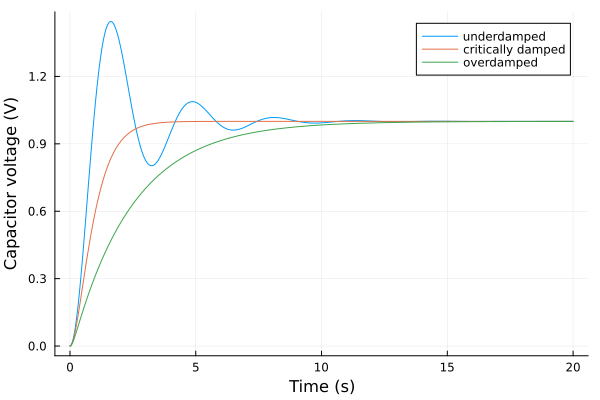
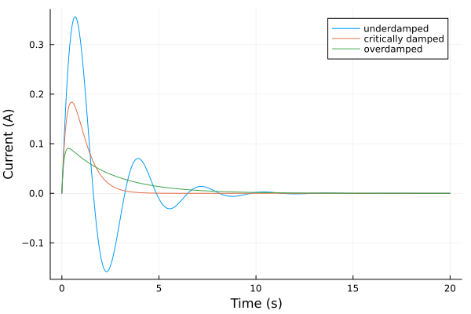
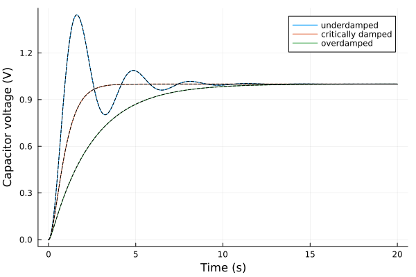
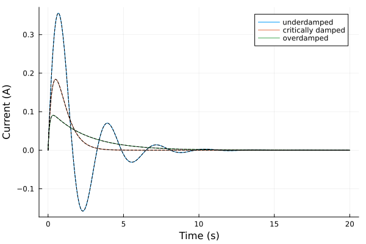

Series RLC Circuit
The source files for all examples can be found in /examples.
Introduction
The series RLC circuit is the electrical second-order system: a voltage source drives a resistor $R$, an inductor $L$ and a capacitor $C$ connected one after the other in a single loop. The inductor and the capacitor exchange energy and the resistor dissipates it, so depending on $R$ the circuit rings, settles as fast as it can without ringing, or creeps to its final value. Here a switch closes at $t = 0$ and applies a constant voltage $V$ to the circuit at rest, a voltage step.
Series RLC model
We assume ideal, linear elements: a resistor $v_R = R\,i$, an inductor $v_L = L\,\frac{di}{dt}$ and a capacitor $v_C = q/C$ with charge $q$, $\dot{q} = i$. The same current $i$ flows through all three, and Kirchhoff's voltage law around the loop gives
\[L\,\frac{di}{dt} + R\,i + \frac{q}{C} = V, \qquad \frac{dq}{dt} = i.\]
Eliminating $i$, the capacitor voltage $v_C = q/C$ obeys the standard second-order equation
\[\ddot{v}_C + 2\zeta\omega_n\,\dot{v}_C + \omega_n^2\,v_C = \omega_n^2\,V, \qquad \omega_n = \frac{1}{\sqrt{LC}}, \qquad \zeta = \frac{R}{2}\sqrt{\frac{C}{L}},\]
with the natural frequency $\omega_n$ and the damping ratio $\zeta$. The circuit starts at rest: the capacitor is discharged and no current flows, $v_C(0) = 0$ and $\dot{v}_C(0) = i(0)/C = 0$.
Step response
For $t > 0$ the input is the constant $V$, so $v_C = V + v_h$, where $V$ is the particular solution and $v_h$ solves the homogeneous equation. Trying $v_h = e^{st}$ gives the characteristic equation
\[s^2 + 2\zeta\omega_n\,s + \omega_n^2 = 0, \qquad s_{1,2} = -\omega_n\left(\zeta \mp \sqrt{\zeta^2 - 1}\right).\]
The sign of $\zeta^2 - 1$ gives three cases. Fitting the two constants of $v_h$ to $v_C(0) = 0$ and $\dot{v}_C(0) = 0$, and taking $i = C\,\dot{v}_C$ (with $C\,\omega_n^2 = 1/L$), gives:
- Underdamped, $\zeta < 1$: the roots are complex, $s_{1,2} = -\sigma \pm j\omega_d$ with $\sigma = \zeta\omega_n$ and the damped frequency $\omega_d = \omega_n\sqrt{1 - \zeta^2}$, and
\[v_C(t) = V\left[1 - e^{-\sigma t}\left(\cos\omega_d t + \frac{\sigma}{\omega_d}\sin\omega_d t\right)\right], \qquad i(t) = \frac{V}{L\,\omega_d}\,e^{-\sigma t}\sin\omega_d t.\]
- Critically damped, $\zeta = 1$: a double root $s = -\omega_n$, and
\[v_C(t) = V\left[1 - (1 + \omega_n t)\,e^{-\omega_n t}\right], \qquad i(t) = \frac{V}{L}\,t\,e^{-\omega_n t}.\]
- Overdamped, $\zeta > 1$: two real roots $s_1 \ne s_2$, and
\[v_C(t) = V\left[1 + \frac{s_2\,e^{s_1 t} - s_1\,e^{s_2 t}}{s_1 - s_2}\right], \qquad i(t) = \frac{V}{L}\,\frac{e^{s_1 t} - e^{s_2 t}}{s_1 - s_2}.\]
In each case $v_C(0) = 0$ and $i(0) = 0$, and $v_C \to V$, $i \to 0$ as $t \to \infty$: in steady state the capacitor blocks the current and takes the whole source voltage.
Bond Graph Model
All four elements carry the same current, so their bonds meet at one 1-junction. Karnopp, Margolis & Rosenberg (2012) read an electrical 1-junction as Kirchhoff's voltage law at a common current, a series connection (§3.3, pp. 58–61, Fig. 3.11). They model a resistor as R with $e = R\,i$ (§3.1, p. 40, Table 3.1), a capacitor as a compliance C with displacement $q = \int i\,dt$ and $e = q/C$ (§3.1, pp. 40–42, Table 3.2), an inductor as an inertia I with momentum the flux linkage $\lambda = L\,i$, $\dot{\lambda} = e$ (§3.1, pp. 43–47, Table 3.3), and the source as an effort source Se (§3.1, p. 49, Table 3.4). The bond graph, drawn from the model with bgplot, is shown once the model is built.
| Element | Stands for | Parameter |
|---|---|---|
Se:V | the voltage step | $V$ |
R:R | the resistor | $R$ |
I:L | the inductor | $L$ |
C:C | the capacitor | $C$ |
Preliminary Steps
In this example we build the bond graph model of the circuit and simulate its step response for three resistances: one underdamped, one critically damped and one overdamped. We compare each with the analytic step response derived above and with a plain ModelingToolkit model of the loop equations.
We import the bond-graph toolkit to model the system and OrdinaryDiffEqTsit5 to solve the resulting ODE. We also import ModelingToolkit's independent variable t and derivative D for the reference model at the end.
using BondGraphToolkit
using BondGraphToolkit.ModelingToolkit: t_nounits as t, D_nounits as D
using OrdinaryDiffEqTsit5
using PlotsSystem Element Definitions
The source, a 1 V step: a constant effort applied to the circuit at rest from $t = 0$.
@named V = Se(1.0) # (V) Source voltage\[ \begin{align} e\left( t \right) &= \mathtt{power.e}\left( t \right) \\ \mathtt{pout.e}\left( t \right) &= \mathtt{power.e}\left( t \right) \\ f\left( t \right) &= - \mathtt{pout.f}\left( t \right) + \mathtt{power.f}\left( t \right) \\ e\left( t \right) &= 1 \end{align} \]
The passive elements. With $L = 1$ H and $C = 0.25$ F the natural frequency is $\omega_n = 2$ rad/s and $\zeta = R/4$; the resistance is changed per case below.
@named R = Resistance(R = 1.0) # (Ohm) Resistance
@named L = Inertia(I = 1.0) # (H) Inductance
@named C = Compliance(C = 0.25) # (F) Capacitance\[ \begin{align} \frac{\mathrm{d}q\left( t \right)}{\mathrm{d}t} &= f\left( t \right) \\ e\left( t \right) &= \mathtt{power.e}\left( t \right) \\ \mathtt{pout.e}\left( t \right) &= \mathtt{power.e}\left( t \right) \\ f\left( t \right) &= - \mathtt{pout.f}\left( t \right) + \mathtt{power.f}\left( t \right) \\ e\left( t \right) &= \frac{q\left( t \right)}{C} \end{align} \]
Model Construction
A single 1-junction holds the whole circuit. Following Karnopp's usual orientation (§3.1, pp. 39, 42, 49), the source's bond points into the junction (V => :pout, positive) and the bonds of the passive elements point out of it, towards the elements (a bare member x). By the junction sign rule (§3.3, p. 59) the junction then states that all four bonds carry the current $i$ and that $V - v_R - v_L - v_C = 0$, Kirchhoff's voltage law.
@named model = Junction1(V => :pout, R, L, C)\[ \begin{align} 0 &= \mathrm{connect}\left( V_{+}pout, core_{+}p1 \right) \\ 0 &= \mathrm{connect}\left( R_{+}power, core_{+}p2 \right) \\ 0 &= \mathrm{connect}\left( L_{+}power, core_{+}p3 \right) \\ 0 &= \mathrm{connect}\left( C_{+}power, core_{+}p4 \right) \\ - \mathtt{core.p2.f}\left( t \right) &= \mathtt{core.p1.f}\left( t \right) \\ - \mathtt{core.p3.f}\left( t \right) &= \mathtt{core.p1.f}\left( t \right) \\ - \mathtt{core.p4.f}\left( t \right) &= \mathtt{core.p1.f}\left( t \right) \\ 0 &= \mathtt{core.p1.e}\left( t \right) - \mathtt{core.p2.e}\left( t \right) - \mathtt{core.p3.e}\left( t \right) - \mathtt{core.p4.e}\left( t \right) \\ \mathtt{V.e}\left( t \right) &= \mathtt{V.power.e}\left( t \right) \\ \mathtt{V.pout.e}\left( t \right) &= \mathtt{V.power.e}\left( t \right) \\ \mathtt{V.f}\left( t \right) &= - \mathtt{V.pout.f}\left( t \right) + \mathtt{V.power.f}\left( t \right) \\ \mathtt{V.e}\left( t \right) &= 1 \\ \mathtt{R.e}\left( t \right) &= \mathtt{R.power.e}\left( t \right) \\ \mathtt{R.pout.e}\left( t \right) &= \mathtt{R.power.e}\left( t \right) \\ \mathtt{R.f}\left( t \right) &= - \mathtt{R.pout.f}\left( t \right) + \mathtt{R.power.f}\left( t \right) \\ \mathtt{R.e}\left( t \right) &= \mathtt{R.R} ~ \mathtt{R.f}\left( t \right) \\ \frac{\mathrm{d}\mathtt{L.p}\left( t \right)}{\mathrm{d}t} &= \mathtt{L.e}\left( t \right) \\ \mathtt{L.e}\left( t \right) &= \mathtt{L.power.e}\left( t \right) \\ \mathtt{L.pout.e}\left( t \right) &= \mathtt{L.power.e}\left( t \right) \\ \mathtt{L.f}\left( t \right) &= - \mathtt{L.pout.f}\left( t \right) + \mathtt{L.power.f}\left( t \right) \\ \mathtt{L.f}\left( t \right) &= \frac{\mathtt{L.p}\left( t \right)}{\mathtt{L.I}} \\ \frac{\mathrm{d}\mathtt{C.q}\left( t \right)}{\mathrm{d}t} &= \mathtt{C.f}\left( t \right) \\ \mathtt{C.e}\left( t \right) &= \mathtt{C.power.e}\left( t \right) \\ \mathtt{C.pout.e}\left( t \right) &= \mathtt{C.power.e}\left( t \right) \\ \mathtt{C.f}\left( t \right) &= - \mathtt{C.pout.f}\left( t \right) + \mathtt{C.power.f}\left( t \right) \\ \mathtt{C.e}\left( t \right) &= \frac{\mathtt{C.q}\left( t \right)}{\mathtt{C.C}} \end{align} \]
The library draws the bond graph from the model:
bgplot(model)
-->
<!-- Title: BondGraph Pages: 1 -->
<svg width="256pt" height="202pt"
viewBox="0.00 0.00 256.00 202.00" xmlns="http://www.w3.org/2000/svg" xmlns:xlink="http://www.w3.org/1999/xlink">
<g id="graph0" class="graph" transform="scale(1 1) rotate(0) translate(4 198)">
<title>BondGraph</title>
<polygon fill="white" stroke="none" points="-4,4 -4,-198 252,-198 252,4 -4,4"/>
<!-- model -->
<g id="node1" class="node">
<title>model</title>
<text xml:space="preserve" text-anchor="middle" x="124" y="-92.33" font-family="Times,serif" font-size="14.00">1</text>
</g>
<!-- R -->
<g id="node3" class="node">
<title>R</title>
<text xml:space="preserve" text-anchor="middle" x="221" y="-92.33" font-family="Times,serif" font-size="14.00">R:R</text>
</g>
<!-- model&%2345;>R -->
<g id="edge2" class="edge">
<title>model&%2345;>R</title>
<path fill="none" stroke="black" d="M150.96,-97C161.12,-97 172.94,-97 183.91,-97"/>
<polygon fill="black" stroke="black" points="193.87,-97 183.87,-101.5 189.07,-97 183.87,-97 183.87,-97 193.87,-97"/>
</g>
<!-- C -->
<g id="node5" class="node">
<title>C</title>
<text xml:space="preserve" text-anchor="middle" x="124" y="-13.32" font-family="Times,serif" font-size="14.00">C:C</text>
</g>
<!-- model&%2345;>C -->
<g id="edge4" class="edge">
<title>model&%2345;>C</title>
<path fill="none" stroke="black" d="M124,-79.34C124,-68.25 124,-57.17 124,-46.08"/>
<polygon fill="black" stroke="black" points="124,-36.1 128.5,-46.1 124,-40.9 124,-46.1 124,-46.1 124,-36.1"/>
</g>
<!-- V -->
<g id="node2" class="node">
<title>V</title>
<text xml:space="preserve" text-anchor="middle" x="27" y="-92.33" font-family="Times,serif" font-size="14.00">Se:V</text>
</g>
<!-- V&%2345;>model -->
<g id="edge1" class="edge">
<title>V&%2345;>model</title>
<path fill="none" stroke="black" d="M53.96,-97C64.12,-97 75.94,-97 86.91,-97"/>
<polygon fill="black" stroke="black" points="96.87,-97 86.87,-101.5 92.07,-97 86.87,-97 86.87,-97 96.87,-97"/>
</g>
<!-- L -->
<g id="node4" class="node">
<title>L</title>
<text xml:space="preserve" text-anchor="middle" x="124" y="-171.32" font-family="Times,serif" font-size="14.00">I:L</text>
</g>
<!-- L&%2345;>model -->
<g id="edge3" class="edge">
<title>L&%2345;>model</title>
<path fill="none" stroke="black" d="M124,-148.16C124,-137.07 124,-125.98 124,-114.9"/>
<polygon fill="black" stroke="black" points="124,-158.13 119.5,-148.13 124,-153.34 124,-148.13 124,-148.13 124,-158.13"/>
</g>
</g>
</svg>
)
Analysing the model
mtkcompile reduces the model to its states: the inductor's flux linkage and the capacitor's charge.
sys = mtkcompile(model)\[ \begin{align} \frac{\mathrm{d}\mathtt{L.p}\left( t \right)}{\mathrm{d}t} &= \mathtt{L.e}\left( t \right) \\ \frac{\mathrm{d}\mathtt{C.q}\left( t \right)}{\mathrm{d}t} &= \mathtt{L.f}\left( t \right) \end{align} \]
Print system states
unknowns(sys)2-element Vector{SymbolicUtils.BasicSymbolicImpl.var"typeof(BasicSymbolicImpl)"{SymReal}}:
L₊p(t)
C₊q(t)Print system parameters
parameters(sys)3-element Vector{SymbolicUtils.BasicSymbolicImpl.var"typeof(BasicSymbolicImpl)"{SymReal}}:
R₊R
L₊I
C₊CPrint the system's equations in terms of the states
full_equations(sys)\[ \begin{align} \frac{\mathrm{d}\mathtt{L.p}\left( t \right)}{\mathrm{d}t} &= 1 + \frac{ - \mathtt{C.q}\left( t \right)}{\mathtt{C.C}} + \frac{ - \mathtt{L.p}\left( t \right) ~ \mathtt{R.R}}{\mathtt{L.I}} \\ \frac{\mathrm{d}\mathtt{C.q}\left( t \right)}{\mathrm{d}t} &= \frac{\mathtt{L.p}\left( t \right)}{\mathtt{L.I}} \end{align} \]
Generated equations against the hand derivation
bgequations gives the same equations with the names we choose. We rename the states to the flux linkage $\lambda = L\,i$ and the charge $q$, and the parameters to the symbols of the introduction (inside a let, so the names R, L and C keep pointing at the elements):
let
@variables λ(t) q(t)
@parameters R L C
latexify(bgequations(model; rename = Dict(model.L.p => λ, model.C.q => q,
model.L.I => L, model.R.R => R,
model.C.C => C)))
end\begin{align} \frac{\mathrm{d}\lambda\left( t \right)}{\mathrm{d}t} &= 1 + \frac{ - q\left( t \right)}{C} + \frac{ - R ~ \lambda\left( t \right)}{L} \ \frac{\mathrm{d}q\left( t \right)}{\mathrm{d}t} &= \frac{\lambda\left( t \right)}{L} \end{align}
The constant source appears as its value, $V = 1$. The charge equation is $\dot{q} = \lambda/L = i$. The flux equation is the 1-junction's voltage balance, $\dot{\lambda} = V - R\,\lambda/L - q/C$; with $\lambda = L\,i$ it reads $L\,\frac{di}{dt} = V - R\,i - q/C$, the loop equation of the introduction.
System Simulations
Bond graph model
Define the simulation time
tspan = (0.0, 20.0)(0.0, 20.0)The three resistances: $\zeta = 0.25$ (underdamped), $\zeta = 1$ (critically damped) and $\zeta = 2.5$ (overdamped).
Rs = [1.0, 4.0, 10.0] # (Ohm)
labels = ["underdamped" "critically damped" "overdamped"]1×3 Matrix{String}:
"underdamped" "critically damped" "overdamped"One ODEProblem per case, setting the resistance as for any ModelingToolkit parameter. The circuit starts at rest, the defaults $q(0) = 0$ and $\lambda(0) = 0$. Tight tolerances let us compare with the analytic solution.
sols = [solve(ODEProblem(sys, [sys.R.R => r], tspan), Tsit5(), reltol = 1e-10, abstol = 1e-10)
for r in Rs];The capacitor voltage is the effort on the capacitor's bond, and the current the flow common to all bonds.
plot([s.t for s in sols], [s[model.C.e] for s in sols], labels = labels,
xlabel = "Time (s)", ylabel = "Capacitor voltage (V)")
The current starts at zero, as the inductor requires, and decays to zero once the capacitor is charged:
plot([s.t for s in sols], [s[model.L.f] for s in sols], labels = labels,
xlabel = "Time (s)", ylabel = "Current (A)")
Analytic step response
The three closed forms derived in the introduction, as functions of time, returning the capacitor voltage and the current:
function step_response(τ, Rv; V = 1.0, L = 1.0, C = 0.25)
ωn = 1 / sqrt(L * C)
ζ = Rv / 2 * sqrt(C / L)
if ζ < 1
σ, ωd = ζ * ωn, ωn * sqrt(1 - ζ^2)
vC = V * (1 - exp(-σ * τ) * (cos(ωd * τ) + σ / ωd * sin(ωd * τ)))
i = V / (L * ωd) * exp(-σ * τ) * sin(ωd * τ)
elseif ζ == 1
vC = V * (1 - (1 + ωn * τ) * exp(-ωn * τ))
i = V / L * τ * exp(-ωn * τ)
else
s1, s2 = -ωn * (ζ - sqrt(ζ^2 - 1)), -ωn * (ζ + sqrt(ζ^2 - 1))
vC = V * (1 + (s2 * exp(s1 * τ) - s1 * exp(s2 * τ)) / (s1 - s2))
i = V / L * (exp(s1 * τ) - exp(s2 * τ)) / (s1 - s2)
end
return vC, i
endstep_response (generic function with 1 method)Series RLC model
The reference model is the pair of loop equations derived by hand, in the charge $q$ and the current $i$, with the resistance as a parameter:
@variables q(t) i(t)
@parameters Rᵥ
Lᵥ = 1.0 # (H) Inductance
Cᵥ = 0.25 # (F) Capacitance
Vᵥ = 1.0 # (V) Source voltage
eqs_ref = [
D(q) ~ i, # Charge on the capacitor
Lᵥ * D(i) ~ Vᵥ - Rᵥ * i - q / Cᵥ, # Kirchhoff's voltage law
]\[ \begin{align} \frac{\mathrm{d}q\left( t \right)}{\mathrm{d}t} &= i\left( t \right) \\ \frac{\mathrm{d}i\left( t \right)}{\mathrm{d}t} &= 1 - 4 ~ q\left( t \right) - \mathtt{R{_v}} ~ i\left( t \right) \end{align} \]
We build the System, compile it, and solve one ODEProblem per resistance, from rest.
@named ref = System(eqs_ref, t)
ref_sys = mtkcompile(ref)
ref_sols = [solve(ODEProblem(ref_sys, [q => 0.0, i => 0.0, Rᵥ => r], tspan), Tsit5(),
reltol = 1e-10, abstol = 1e-10) for r in Rs];Compare models
The bond graph's capacitor voltage against the analytic step response (dashed), for the three cases:
plot([s.t for s in sols], [s[model.C.e] for s in sols], labels = labels,
xlabel = "Time (s)", ylabel = "Capacitor voltage (V)")
plot!([τ -> step_response(τ, r)[1] for r in Rs], tspan..., labels = "",
linestyle = :dash, color = :black)
And the current:
plot([s.t for s in sols], [s[model.L.f] for s in sols], labels = labels,
xlabel = "Time (s)", ylabel = "Current (A)")
plot!([τ -> step_response(τ, r)[2] for r in Rs], tspan..., labels = "",
linestyle = :dash, color = :black)
On a common time grid, the largest difference of the bond graph model from the analytic solution and from the reference model, over the capacitor voltage and the current, for each case (one row per case: analytic, reference):
tgrid = range(tspan..., length = 1001)
function maxdiff(sol, ref_sol, r)
vC, i_bg = sol(tgrid; idxs = model.C.e).u, sol(tgrid; idxs = model.L.f).u
exact = step_response.(tgrid, r)
analytic = max(maximum(abs, vC .- first.(exact)), maximum(abs, i_bg .- last.(exact)))
reference = max(maximum(abs, vC .- ref_sol(tgrid; idxs = q).u ./ Cᵥ),
maximum(abs, i_bg .- ref_sol(tgrid; idxs = i).u))
return analytic, reference
end
maxdiff.(sols, ref_sols, Rs)3-element Vector{Tuple{Float64, Float64}}:
(4.666000918973623e-11, 0.0)
(2.8043456445914217e-11, 0.0)
(2.380418084868552e-11, 0.0)The differences from the reference model vanish, to round-off, because with $L = 1$ both models are the same ODE in the same states ($\lambda = i$), solved by the same steps. The bond graph model reproduces the analytic step response of the series RLC circuit in all three damping regimes, to the solver's tolerance.
This page was generated using Literate.jl.